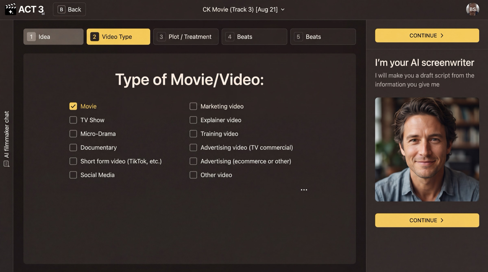
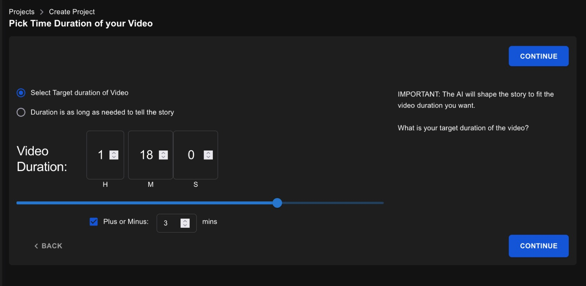

Step 3 of 8
Pick the type and length
Tell the AI what kind of video this is and how long it should run. Tick one type on Type of Movie/Video, then click CONTINUE ›. On Duration, set the target length and click CONTINUE › again.

Video Type: one tick, then Continue.

Duration, as the shipping app draws it today (the new design is not rendered yet). Set the hours and minutes, or pick “Duration is as long as needed to tell the story”.
Two short choices
Type of Movie/Video sets the form: Movie, TV Show, Micro-Drama, Documentary, Short form video, Social Media, Marketing video, Explainer video, Training video, Advertising, or Other video. The form decides how the AI paces the story, how many acts it uses, and how scenes are cut.
Duration sets the target running time. The AI shapes the story to fit it, so a 90-second ad and a 110-minute feature get very different structures from the same idea.
Your decision: a fixed length or not
- Select Target duration of Video when you have a slot to fill: an ad, a festival short, a platform limit. Add a Plus or Minus margin if a little over or under is fine.
- Duration is as long as needed to tell the story when the story matters more than the clock. Good for a first draft.
Why you go next to the treatment
Pressing CONTINUE › on Duration starts the AI. It writes a treatment first, because a treatment is quick to read and quick to fix, long before anyone writes dialogue.